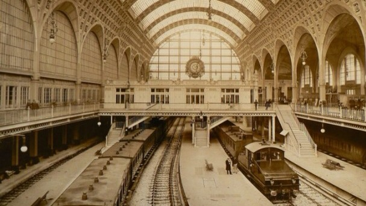
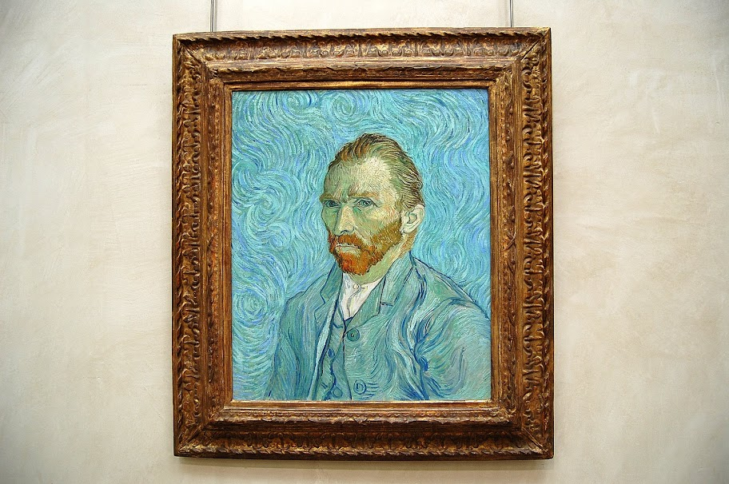
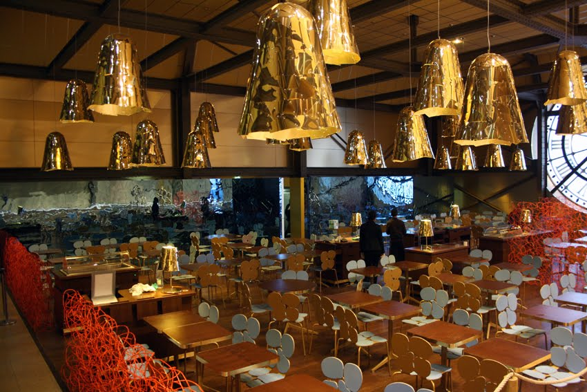

Історія Основания Музею
28 мая 1900 года на левом берегу Сены, прямо напротив сада Тюильри, открыли первый во всем мире электрифицированный железнодорожный вокзал. Архитектором проекта выступил Виктор Лалу.
С Орсе отправлялись поезда в направлении Орлеана, Тулузы и Бордо. Для удобства пассажиров в здании вокзала был построен отель с 370 номерами, рестораны и залы для проведения мероприятий. В 1939 году надобность в вокзале Орсе пропала, так как были запущены более удобные маршруты с других железнодорожных станций. В 1971 году здание решили снести, но Жорж Помпиду, который на тот момент был президентом Франции, высказал идею о преобразовании вокзала в музей. В 1978 году зданию присвоили статус исторического памятника, а уже во время президентства Жискара д'Эстена вокзал начали реконструировать, преобразовывая в музей. Работы велись на протяжении 6 лет — с 1980 по 1986 год. В 1986 году музей открыл свои двери для посетителей. Огромное здание позволило разместить большое количество экспонатов, которые переехали из других музеев. Естественное освещение картинам и статуям обеспечивает шикарный стеклянный купол. Архитектор проекта музея — Гаэ Ауленти.
Сегодня музей Орсе посещают более 3,5 миллионов человек. Если вы собираетесь войти в число этих посетителей, непременно забронируйте один из отелей Парижа в 7-м округе — ведь именно тут сосредоточено множество интереснейших достопримечательностей французской столицы.
Коллекции музея Орсе: что посмотреть
Musee d'Orsay пополнялся из самых различных источников. Сюда привозили предметы искусства из Лувра, Люксембургского дворца, Малого дворца, а также галереи Жё-де-Пом. Некоторые экспонаты были подарены музею частными коллекционерами. Галерея имеет три уровня общей площадью 57 400 кв.м, все работы разделены по тематикам и техникам исполнения. На нижнем этаже расположены полотна, написанные в период с 1848 по 1870 год. Здесь можно увидеть работы «Завтрак на траве» Э. Мане, «Ателье» Коро, «Охота на тигра» Эжена Делакруа, «Ангел Господень» Милле, «Гладильщицы» Дега.
На среднем уровне представлены скульптуры — работы времен III Империи. XIX столетие было весьма плодотворным периодом для скульптуры. Целью заказа на их создание было провозглашение своего статуса, украшение дома, а также возможность вписать свои идеалы в бронзу и камень. На создание скульптур в те времена был огромный спрос. Это отслеживается как раз в центральном нефе музея Орсе, где представлено 1200 экспонатов. Среди них: «Бронзовый век» Огюста Родена, «Маленькая 14-летняя танцовщица» Эдгара Дега, «Кара» Эме-Жюля Далу, «Средиземное море» Аристида Майоля.

Верхний этаж — царство импрессионизма, экспрессионизма и постимпрессионизма. Здесь можно любоваться произведениями Руссо («Заклинательница змей»), Сёра («Цирк»), Ван Гога («Звездная ночь над Роной», «Портрет доктора Гаше», «Автопортрет»), Также здесь представлены полотна Гогена («Автопортрет с желтым Христом», «Таитянки»), Ренуара («Бал в Мулен де ла Галетт»), К. Моне («Тюльпаны Голландии»), Писсарро («Старая дорога из Аннери в Понтуаз. Заморозки») и других.
Винсент Ван Гог «Автопортрет», фото: Татьяна Гайдук ВАЖНО! Если вы хотите ознакомиться с выставкой в хронологическим порядке, то будьте готовы провести здесь целый день, а то и два дня. Если вас интересуют конкретные полотна, то на входе можно купить карту с нумерацией галерей и подробным описанием.
Инфраструктура — где поесть и купить сувениры
Осмотрев шедевры музея Орсе, посетители могут отправиться в кафе Campana, которое располагается на верхнем ярусе. Отсюда открывается потрясающий вид на Монмартр.
Нельзя обойти стороной Restaurant du Musee d'Orsay, основанный еще в 1900 году. Интерьер украшен фресками и позолотой, подчеркивая историческую ценность заведения. Здесь подают традиционные французские блюда. По отзывам туристов, цены здесь несколько завышены.

Еще одно уютное место, где можно провести время, обсуждая увиденное, — кафе L’Ours. Также на территории музея работает сувенирный магазин, где можно приобрести на память канцелярию, открытки, статуэтки, книги, репродукции картин и прочее. Кстати, сувениры можно приобрести в интернет-магазине музея.